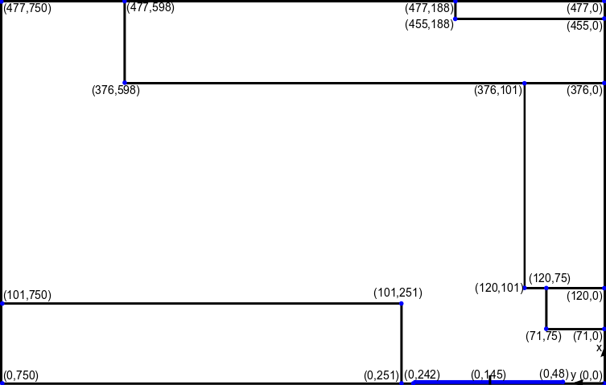

{% extends "main.html" %}

{% block content %}

<link rel="stylesheet" type="text/css" href="{{ url_for('static', filename='css/debug_tracker.css')}}">

<script>
    $(document).ready(function(){
        var img = document.getElementById("dot_page");
        var socket = io.connect('http://'+ document.domain+':'+location.port);

        // number of squares to cover the whole image with squares of 10px by 10px
        var squares_height = 48;
        var squares_width = 75;

        //this number indicates the biggest reachable value of the elements in the val_matrix
        var max_int = 1000;

        socket.on('connect', function(){
            console.log('Im Connected');
           });

        // making matrix to store all the divs that make up the squares
        var div_matrix = [];
        for (i=0; i<squares_height;i++){
            div_matrix[i] = [];
            for (j=0;j<squares_width;j++){
                div_matrix[i][j] = undefined;
            }
        }

        //drawing initial heatmap, everything is gray
        for (i=0; i<squares_height;i++) {
            for (j = 0; j < squares_width; j++) {
                var grid_el = document.createElement('div');
                grid_el.className = "grid_element";
                grid_el.style.top = String(10 * i) + "px";
                grid_el.style.left = String(10 * j) + "px";
                grid_el.style.backgroundColor = "#c3c3c3";
                document.getElementById("grid").appendChild(grid_el);
                div_matrix[i][j] = grid_el;
            }
        }

        //function used to convert to "square-coords"
        function scale_coords(coords){
            new_x = Math.round(squares_height*coords[0]/477);
            new_y = Math.round(squares_width*coords[1]/750);
            return [new_x, new_y];
        }

        socket.on('localiser_update', function(data){
            console.log("update received");
            console.log(data);


            img.innerHTML = '';

            // for every person detected, the values of the exact square and the surrounding squares are increased
            for(person_id in data){
                person_loc = data[person_id]["position"];
                color_hex = intToRGB(person_id);
                square_loc = scale_coords(person_loc);

                div_matrix[square_loc[0]][square_loc[1]].style.backgroundColor = color_hex;
            }
        });


    });
</script>

<html>
<head>
    <title>CSS Grids</title>
    <style>
        .grid_container{
            left: 0;
            top: 0;
            position: absolute;
        }
        .grid_element{
            height: 10px;
            width: 10px;
            position: absolute;
            opacity: 0.5;

        }
    </style>
</head>
<body>
    <h1>Tracing</h1>
    <div class="main_wrapper">
        <div class="debug_img" id="img">
            
            <div id="dot_page" style="height: 100%; width: 100%; left: 0;top: 0; position: absolute;"></div>
            <div class="grid_container" id="grid">
            </div>
        </div>
    </div>
</body>
</html>
<div class="main_wrapper">

</div>
{% endblock %}